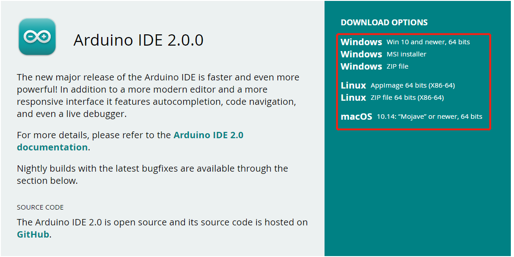
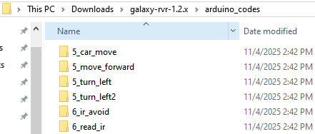
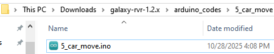
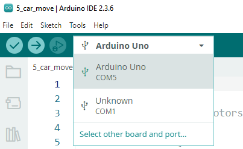
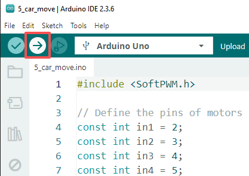

Quick Start with Arduino
In this chapter, you’ll learn how to quickly open and run specific Arduino example codes to make your GalaxyRVR perform various actions.
If you want to understand the code logic and programming principles behind these examples, please refer to the Programming with Arduino IDE chapter.
How to Quickly Open an Arduino Example
In this example, we’ll demonstrate how to use the Arduino IDE to open an arduino example.
Start the GalaxyRVR.
When using GalaxyRVR for the first time, it is recommended to fully charge the battery by plugging in a Type-C USB cable. Then, turn on the power.
The ESP32-CAM and the Arduino board share the same RX (receive) and TX (transmit) pins. So, before uploading the code, you’ll need to first release the ESP32-CAM by slide this switch to right side to avoid any conflicts or potential issues.

Connect your Arduino board to your computer using a USB cable.
Visit Arduino IDE 2.0.0 Page and download the Arduino IDE for your operating system. Follow the installation prompts to complete setup.

Download the example codes from the link below:
Unzip the downloaded file, navigate to
galaxy-rvr-1.2.x\lesson_codes.
Select an example code folder, navigate to that folder, then double-click the
.inofile to open it in the Arduino IDE.
In the Arduino IDE, select Arduino Uno as the board and choose the appropriate port for your device.

Click the Upload button (right-pointing arrow) to upload the code to your board.

Note
If you’re not familiar with the Arduino IDE, please refer to:
Examples
5_car_move: The rover moves forward, then backward, turns left and right, and finally stops.6_ir_avoid: The rover avoids obstacles using IR sensors.7_ultrasonic_avoid: The rover avoids obstacles using ultrasonic module.8_ultrasonic_ir_avoid: The rover uses both IR and ultrasonic module to detect obstacles.8_ultrasonic_ir_follow: The rover follows objects using IR and ultrasonic module.9_rgb_car_move: Adds color indicators for movement: green for forward, red for backward, and yellow for turning left or right.10_servo_range: The camera gimbal rotates from 0° to 180° using a for loop, and the current angle is displayed in the Serial Monitor.11_camera_view: View the live video feed from the rover’s camera in a web browser. SunFounder AI Camera library is required.13_read_battery: Monitors the battery voltage through code.